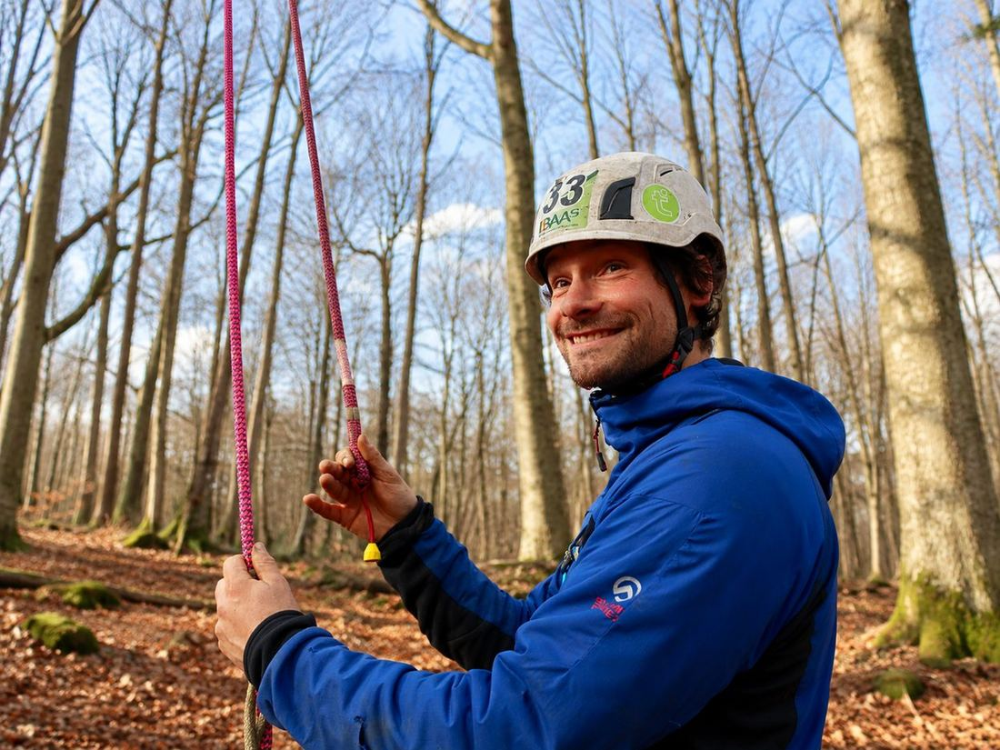
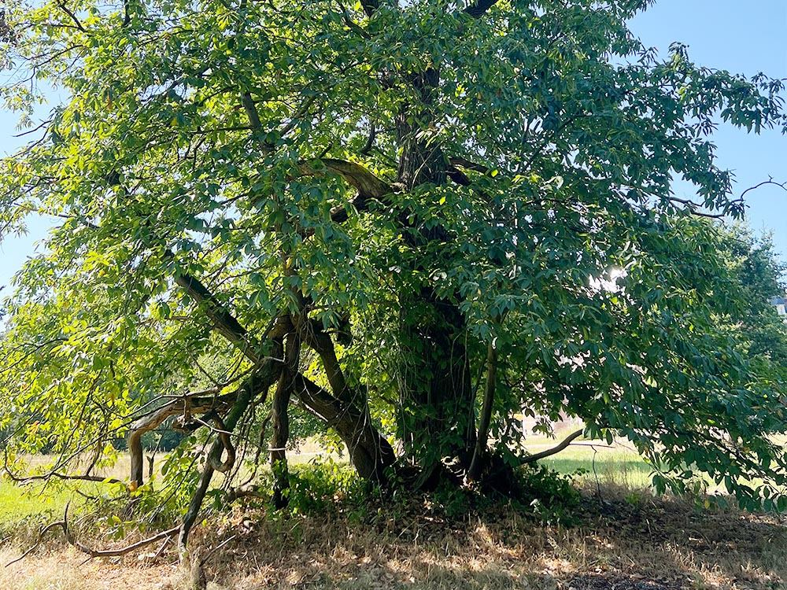

Bomen die mogen groeien.
Met zorg én karakter.
Lode Jans zorgt voor jouw bomen in Oost- en West-Vlaanderen — met eerlijk advies, vakkundige uitvoering en een diepgewortelde visie op behoud en herstel.

Van snoeiwerken tot standplaatsverbetering, met de boom op de eerste plaats. Altijd in overleg met de klant.
Vakkundige snoeiwerken volgens de ETW-normen. Lode snoeit gericht en naar de noden van je boom — aan esthetiek hebben bomen zelf weinig.
De juiste boom op de juiste plek, met een duidelijk eindbeeld voor ogen.
Onafhankelijke expertise, waarbij het bomenbestand centraal staat.
Wanneer vellen écht de beste optie is — veilig en vakkundig. Soms blijft een dode stam bewust staan als waardevolle biotoop (eco-velling).
Snelle interventie bij schade of acuut risico. Veiligheid eerst, behoud waar mogelijk.
Onnodige snoei, rigoureuze ingrepen of waardevol groen vellen — dat past niet binnen de duurzame visie van Stamgast Boombeheer. Wij kiezen voor gerichte zorg, zodat je boom gezond, veilig en mooi blijft.
Onze aanpak
Eenvoudig, eerlijk en altijd in overleg met de klant.
Online, per mail of telefoon — Lode reageert snel.
Inspectie & eerlijk advies op locatie.
Transparante prijs, geen verrassingen achteraf.
Lode doet het werk zelf, met zorg en aandacht.
Eerlijkheid en vakkennis worden het meest gewaardeerd.
"Snel gereageerd en heel correct, vriendelijk advies over de bomen in onze tuin. Op een halve dag was de klus geklaard én tuin netjes opgeruimd. Een echte vakman, aanrader!"
"Erg fijne samenwerking met Lode. Hij denkt graag met je mee, is betrouwbaar en communicatief, vraagt een eerlijke prijs en staat altijd klaar met advies. Ik zou hem absoluut aanbevelen!"
"Boombeheer met respect voor de fauna!"
"Stamgast heeft knap werk verricht om onze krulwilg terug mooi in vorm te plaatsen. Fijne gast om mee samen te werken."